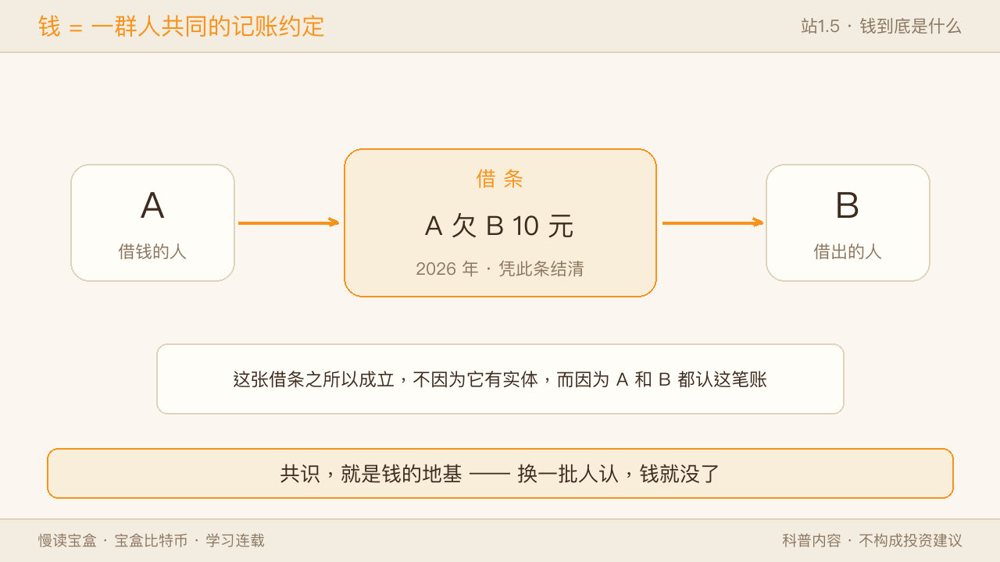
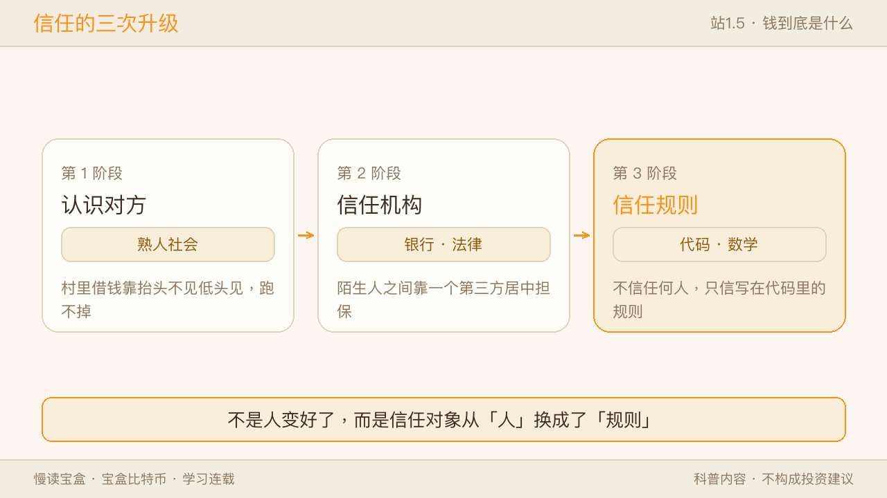
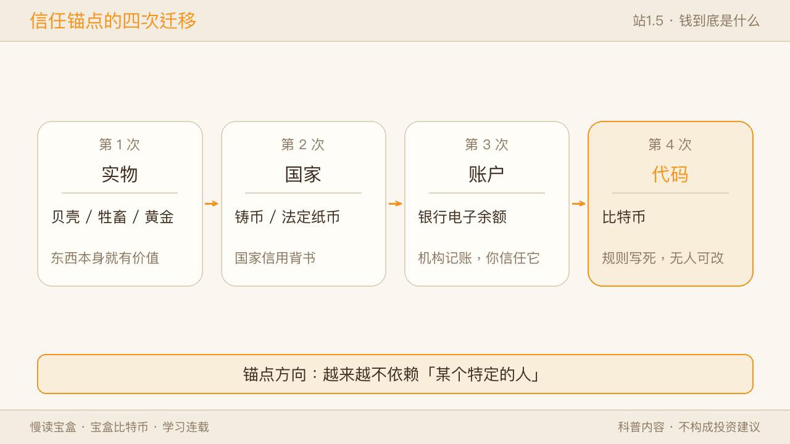
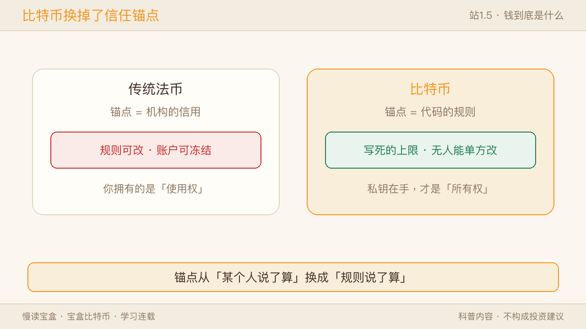
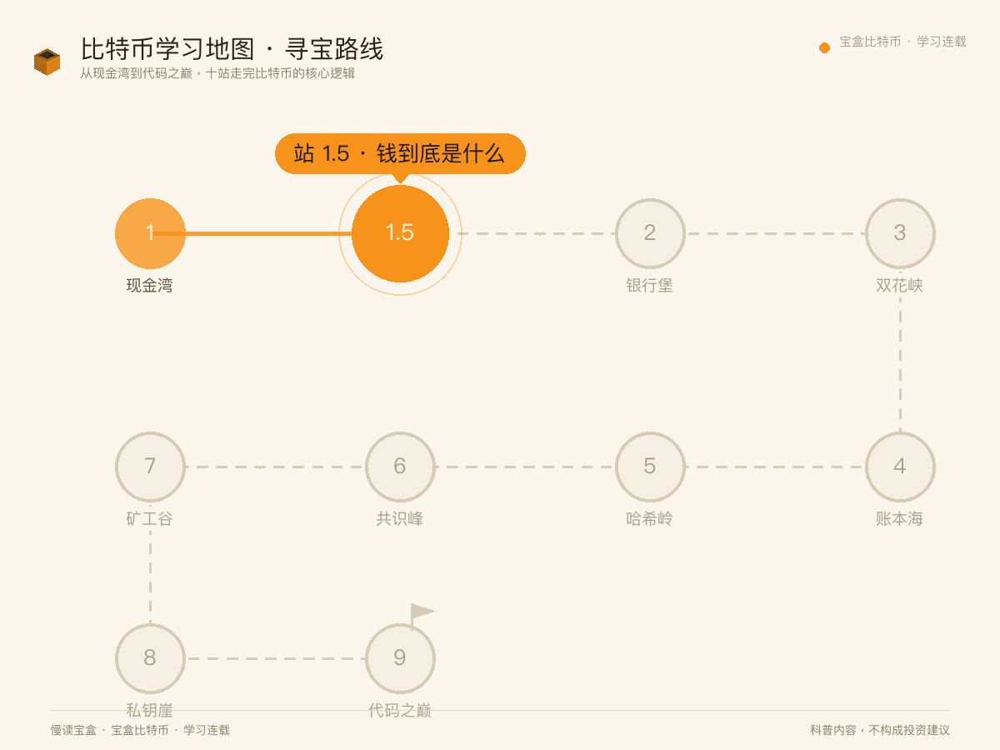
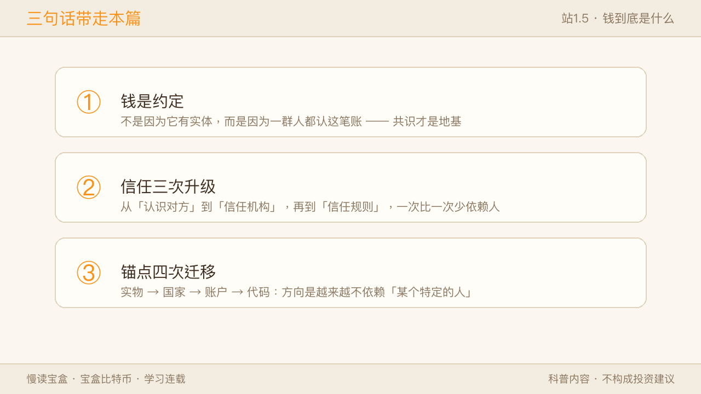

上站（站1 现金湾）我们认识了比特币——一种不需要银行也能转账的电子现金。但有个更底层的问题一直没回答：钱，到底是什么？
如果连「钱是什么」都说不清，后面讲比特币的稀缺、转账、安全，都像是空中盖楼。这一篇我们退一步，把「钱」这件事彻底想透。你会发现：比特币真正的颠覆，不在「又快又便宜」，而在它把钱所依赖的「信任」，换了一个全新的锚点。
一、钱不是「东西」，是一种约定
先做一个思想实验。
假设你我几个人组了个饭局小圈子，私下约定：「这顿饭我请，下顿你请，再下顿他请——轮流来，谁也别赖。」一开始谁也没当真，都当玩笑。可当越来越多的人真的这么做了、也真的愿意「用上一顿的请客记录」去抵下一顿的账时，这张「轮流记录」就管用了——不是因为那顿饭本身还能吃，而是因为圈子里的人都认这个规则。
钱的本质，就是这么简单又这么深：它是一种被一群人共同接受的「约定」——你持有它，是因为你相信别人将来也愿意收。
💡 想得更远一点：钱不是「东西」，是「记账」。 你口袋里的 100 元纸币，本质是央行在对你说「你为社会做过等价贡献」。那张纸只是一张收据。
✅ 像的地方：这和演唱会里的荧光棒、游戏里的金币、原神里的原石很像——没人强迫你认，但只要「场子里的所有人都认」，它就能在圈子里流通、能换到东西。
⚠️ 不一样的地方：日常生活中的钱（纸币、电子余额）背后，还多了一层「国家强制 + 信用背书」。你敢收人民币，不只因为邻居认，更因为法律规定它必须被接受、且有整个经济体在支撑它的购买力。这是轮流请客没有的硬保障。
所以「钱」从来不是某种天然有价值的实物，而是一张社会共识的门票。
二、我们为什么会相信「一张纸」
既然钱是约定，下一个问题就来了：凭什么我信你那张纸，而不是我自己的？
人类解决这个问题，走过了三个阶段：

- 认识对方：最早的小圈子，交易靠「我认识你」。你欠我，我记在心里，跑不了。范围极小，出了村就失灵。
- 信任机构：后来人多了，大家不想彼此认识，就找一个都信的「中间人」——钱庄、银行、央行。纸值钱，是因为背后有机构兜底：它说这纸能换物资，你就信。
- 信任规则：再往后，有人想：如果连机构也不完全信呢？能不能让「规则本身」来担保，而不是某个具体的人或组织？

🔎 换个视角看：
- 从用户视角看：你只想「钱能用」，不在乎谁兜底；所以你只问「这钱在哪儿花得出去」。
- 从系统视角看：必须有人或某物守得住账本——这就是「信任锚点」。历史上这个锚点从「人」搬到「机构」，比特币想把它再搬到「规则」。
✅ 像的地方：这就像你敢坐电梯、敢吃货架上的食品，不是因为认识质检员，而是因为背后有年检制度、保质期规则在兜底——你信的是「系统」，不是「某个人」。 ⚠️ 不一样的地方：传统法币的「信任规则」依然由国家和银行体系制定与维护；而比特币想做的，是把这条规则从「由人管理的制度」换成「由代码和数学写死的协议」——规则不再能被某个机构单方面更改。
这一步，正是比特币出现的真正动机。
三、从贝壳到比特币：信任锚点的四次迁移
把视野拉长，钱的历史，其实就是「信任锚点」不断搬家的过程：

- 贝壳 / 金银（实物锚点）：早期用稀缺实物当钱。信任来自「东西本身就少、难造假」。
- 纸币（国家锚点）：实物太重不好带，改成纸，信任从「实物稀缺」搬到了「国家信用」。
- 电子余额（账户锚点）：钱进一步变成银行账本里的一行数字，信任落在「机构的账本不可随意改」。
- 比特币（代码锚点）：账本不再由某家机构独占，而是复制到全网、由数学规则守护。信任从「某个组织」搬到了「一套公开可验证的规则」。
把这四种钱放一张表里看，会更清楚：
| 实物锚点 | 国家锚点 | 账户锚点 | 代码锚点 | |
|---|---|---|---|---|
| 代表 | 贝壳、金银 | 纸币 | 银行电子余额 | 比特币 |
| 信任谁 | 东西本身稀缺、难造假 | 国家信用 | 机构的账本不被乱改 | 一套公开可验证的规则 |
| 谁握着锚 | 自然界 | 国家 | 银行等机构 | 没有主人，全网共同守护 |
| 单方能改吗 | —— | 能 | 能 | 改动需全网共识 |
✅ 像的地方：每一次迁移，都像你存文件——从电脑本地硬盘，到网盘，再到云笔记——载体变了，但「记一笔账」这件事还在，而且一次比一次更方便、更不易丢。 ⚠️ 不一样的地方：前三次迁移，锚点始终落在「某个权威」手里（国家或大机构）；比特币是第一次，把锚点搬到了没有主人的代码上。这也是它争议最大、也最值得理解的地方。
理解这条线，你就不会再问「比特币有没有价值」这种非此即彼的问题——它只是货币历史上，信任锚点的又一次搬家尝试。
这四次搬家，一层层把「信任」从人手上卸下。可当信任彻底交给「没有主人的代码」，一个老问题会突然变尖：代码要怎么具体拦住作弊？ 那是比特币真正的发动机，我们到「双花峡」一站拆。
📌 边界提示：
- 「法币不好/比特币好」是常被引申出的误解。本篇只解释机制，不评价孰优孰劣——钱没有最好，只有不同历史阶段的不同权衡。
- 信任锚点的迁移是社会工程，不是技术升级——它的代价是要求使用者理解规则（门更高），收益是抗单点操控（底更稳）。
四、回到比特币：它把信任放在了哪里
📌 边界提示：比特币不是中国法定货币，境内禁止虚拟货币代币发行融资与交易炒作；本文仅作区块链科普，不构成任何投资建议。
回到上篇的比特币。你已经知道它靠「公开账本 + 密码学 + 工作量证明」运转。现在用本篇的视角重看一遍：
- 它的账本公开、人人可查——信任不靠某家银行说「你有余额」，而靠全网共同见证。
- 它的规则写死在协议里——总量 2100 万、四年减半，不是谁拍脑袋定的，是代码定的。
- 它的转账无需中间人——信任从「机构兜底」搬到了「数学可验证」。

⚠️ 代价也是真的：没有银行兜底，意味着转账要等网络确认、得自己看好钥匙——这些代价，下一关「双花难题」会告诉你为什么躲不开。

所以比特币不是在「造一种更值钱的钱」，而是在尝试回答一个更根本的问题：如果不要任何中心机构，人之间还能不能互相信任、干净地转账？
上篇你认识了它的「外壳」，这篇你摸到了它的「内核」——去中心化，本质上就是把信任从机构，搬到了规则。
可这句话里藏着一个漏洞：代码里的东西，说到底都是能被复制的数据。 你发给我的那个「数字币」，凭什么不会在同一秒，也悄悄发给了别人？
在现实里，同一张百元钞递给我，它就不在你手里了；可在数字世界，「复制一份」几乎零成本。所以「没有银行、只靠规则」听起来很美，真正难的不是「转账」，而是怎么拦住同一笔钱被花两次。
这个难题叫双重支付（双花）。它困扰数字现金几十年——DigiCash 要靠一家公司发币、b-money 和 Bit Gold 连实现都没做到，全都卡在「没银行怎么防双花」。中本聪那套「公开账本 + 密码学 + 工作量证明」，我们在开篇见过外壳、这篇摸到内核，它真正发明的，恰恰就是解开双花的那一环。
不过别急——拆那套解法之前，得先看清我们想「去中心」的那个对象：银行这个中间人，到底替我们挡住了什么，又顺手埋下了什么。下一站，银行堡。
三句话带走本篇：
